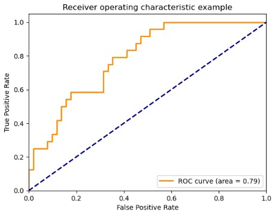
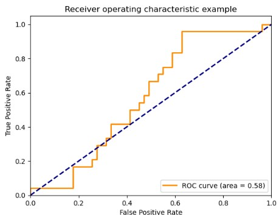
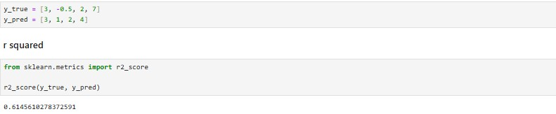
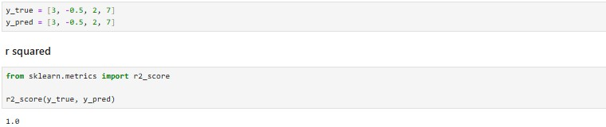

The ROC curve is a graphical representation used to evaluate the performance of a classification model,
showing the trade-off between True Positive rate and False Positive rate. It is an indication telling us
how much the model is capable of distinguishing between classes (Narkhede, 2021). The higher the AUC, the
better the model’s ability to distinguish between classes, a model close to 1 indicates excellent
performance, when the model is around 0.5 the model is randomly guessing, meaning it cannot distinguish
between the classes.
By changing random parameters on the provided notebook, the first graph indicates the model is able to predict
classes very well, the second graph where the AUC is close to 0.5 shows the model is not able to predict and
randomly guessing.


R2 Score
R2 is a statistical measure used in a regression model to determine the proportion of variance in the dependent
variable that can be explained by the independent variable (Taylor, 2024).
The closer the predicted labels are to the actual labels, the higher the R2 score.
When all predicted values equal actual values R2 = 1.0
Run 1

Run 2

References
Narkhede, S. (2021) Understanding AUC - roc curve, Medium.
Available from: https://towardsdatascience.com/understanding-auc-roc-curve-68b2303cc9c5 [Accessed: 15 January 2025].
Taylor, S. (2024) R-squared, Corporate Finance Institute.
Available from: https://corporatefinanceinstitute.com/resources/data-science/r-squared/#:~:text=R%2DSquared%20(R%C2%B2%20or%20the,(the%20goodness%20of%20fit). [Accessed: 10 January 2025].